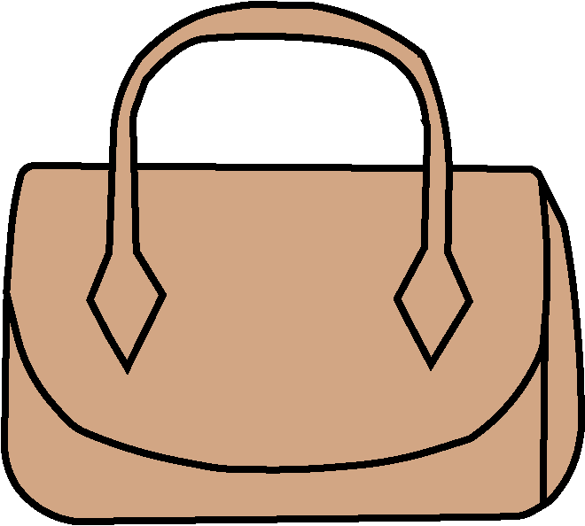
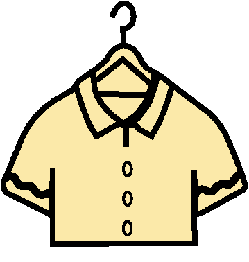

Duurzaamheid in actie
De Kilo Store is een duurzaam initiatief dat het hergebruik van kleding stimuleert, waardoor de levensduur van textiel wordt verlengd en afval uit de mode-industrie verminderd.
Het bespaart ook natuurlijke hulpbronnen zoals water en energie. De winkel moedigt bewuster winkelen aan, waardoor overconsumptie wordt tegengegaan en een alternatief voor fast fashion wordt geboden.
Tips
Accessoires zoals riemen, tassen en sjaals zijn verborgen pareltjes bij De Kilo Store: licht, goedkoop en perfect voor unieke items.
Zoek naar luxe materialen zoals wol, linnen of zijde. Deze stoffen bieden kwaliteit en een luxe uitstraling voor een lage prijs, vaak omdat ze door het gewicht over het hoofd worden gezien.
Let op seizoensgebonden kleuren en trends. De Kilo Store sorteert vaak op kleur, waardoor je eenvoudig items vindt die passen bij de huidige mode en goed combineren met je bestaande kleding.